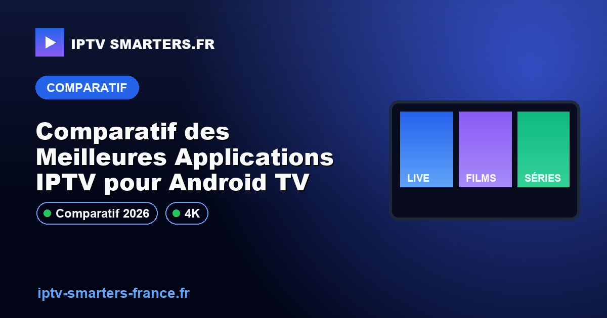

Comparatif des Meilleures Applications IPTV pour Android TV

Dans cet article, nous vous proposons une analyse détaillée et impartiale des meilleures applications IPTV pour Android TV. Ce guide a pour objectif de vous aider à choisir l'application la plus adaptée à vos besoins, en tenant compte des critères de performance, de compatibilité et de sécurité. Nous vous expliquerons également comment configurer votre application IPTV et éviter les erreurs courantes.
Contexte et Prérequis
Les applications IPTV pour Android TV permettent de diffuser des chaînes de télévision via Internet directement sur votre téléviseur. Pour utiliser ces applications, il est essentiel de disposer d'une connexion Internet stable et d'un appareil Android TV compatible. De plus, il est crucial de s'assurer que l'application choisie est légale dans votre pays. Pour une compréhension approfondie de l'IPTV, consultez notre page Comprendre IPTV.
Avant de commencer, assurez-vous que votre Android TV est à jour et que vous avez accès au Google Play Store pour télécharger les applications nécessaires. Une bonne pratique consiste à vérifier les avis et les évaluations des utilisateurs pour éviter les applications de mauvaise qualité.
Méthode de Test et Preuves
Nos tests d'applications IPTV reposent sur des critères objectifs tels que la facilité d'installation, la compatibilité avec différents formats de fichiers et la qualité du streaming. Chaque application a été testée sur plusieurs modèles d'Android TV pour garantir une évaluation complète. Les tests incluent également l'évaluation de l'interface utilisateur et des options de personnalisation disponibles. Pour plus d'informations techniques, vous pouvez consulter developer.android.com/tv.
Nous avons également pris en compte les retours des utilisateurs sur des forums spécialisés et les avis laissés sur le Google Play Store pour compléter notre analyse. Cela nous permet de vous fournir une vue d'ensemble complète et fiable.
Étapes Concrètes pour Configurer votre Application IPTV
- Téléchargez l'application IPTV depuis le Google Play Store.
- Installez l'application sur votre Android TV en suivant les instructions à l'écran.
- Configurez l'application en ajoutant votre liste de chaînes IPTV, généralement au format M3U.
- Vérifiez la qualité du streaming et ajustez les paramètres si nécessaire pour une expérience optimale.
- Assurez-vous que votre connexion Internet est stable pour éviter le buffering. Consultez notre guide pour résoudre le buffering.
Ces étapes vous aideront à configurer correctement votre application IPTV et à profiter d'une expérience de visionnage fluide et sans interruption.
Points de Contrôle pour une Expérience Optimale
- Compatibilité avec votre modèle d'Android TV : vérifiez que l'application est compatible avec votre appareil.
- Support des formats de fichiers IPTV courants : assurez-vous que l'application peut lire les formats de fichiers que vous utilisez.
- Facilité de navigation dans l'interface utilisateur : une interface intuitive facilite l'accès aux chaînes et aux paramètres.
- Options de personnalisation disponibles : certaines applications offrent des options de personnalisation pour améliorer votre expérience utilisateur.
Ces points de contrôle vous aideront à évaluer et à choisir l'application IPTV qui répond le mieux à vos besoins spécifiques.
Diagnostic des Erreurs Fréquentes
| Erreur | Cause Possible | Solution |
|---|---|---|
| Écran noir | Problème de compatibilité | Vérifiez les mises à jour de l'application et du système |
| Buffering fréquent | Connexion Internet instable | Améliorez votre connexion ou consultez notre guide |
| Chaînes manquantes | Liste de chaînes incorrecte | Vérifiez la validité de votre liste de chaînes |
Ce tableau vous aidera à identifier et résoudre les problèmes courants lors de l'utilisation d'applications IPTV sur Android TV.
Limites, Conformité et Sécurité
Il est crucial de s'assurer que l'application IPTV choisie respecte les lois locales sur la diffusion de contenu. L'utilisation d'applications non conformes peut entraîner des sanctions légales. Consultez notre page sur IPTV légal en France pour plus d'informations. De plus, évitez de partager vos informations personnelles sur des plateformes non sécurisées.
Assurez-vous également que l'application que vous utilisez est régulièrement mise à jour pour bénéficier des dernières améliorations de sécurité et de performance. Cela vous protégera contre les vulnérabilités potentielles.
Checklist avant Contact WhatsApp
- Vérifiez que votre application et votre système Android TV sont à jour.
- Notez les erreurs spécifiques rencontrées pour faciliter le diagnostic.
- Assurez-vous que votre connexion Internet est stable et performante.
- Préparez votre liste de chaînes pour une vérification rapide.
Si vous rencontrez toujours des problèmes, demandez un diagnostic de configuration via WhatsApp.
Critères de Choix d'une Application IPTV
Choisir la bonne application IPTV pour Android TV peut sembler complexe en raison de la multitude d'options disponibles. Voici quelques critères essentiels à considérer :
- Compatibilité : Assurez-vous que l'application est compatible avec votre modèle d'Android TV. Certaines applications peuvent ne pas fonctionner correctement sur des versions plus anciennes du système d'exploitation.
- Interface utilisateur : Une interface intuitive et facile à naviguer est cruciale pour une expérience utilisateur agréable. Recherchez des applications avec des menus clairs et des options de personnalisation.
- Support technique : Optez pour des applications qui offrent un support client réactif et des mises à jour régulières pour résoudre les bugs et améliorer les fonctionnalités.
- Options de streaming : Vérifiez si l'application prend en charge les formats de fichiers IPTV courants comme M3U et si elle offre des options de streaming en haute définition.
Ces critères vous aideront à sélectionner une application qui non seulement répond à vos besoins actuels, mais qui est également prête à évoluer avec vous.
Erreurs à Éviter lors de l'Utilisation d'Applications IPTV
L'utilisation d'applications IPTV peut être sujette à certaines erreurs courantes. Voici quelques-unes des erreurs à éviter :
- Ignorer les mises à jour : Ne pas mettre à jour l'application ou le système Android TV peut entraîner des problèmes de compatibilité et de sécurité.
- Utiliser des listes de chaînes non vérifiées : L'utilisation de listes de chaînes non officielles peut entraîner des interruptions de service et des problèmes légaux.
- Oublier de vérifier la connexion Internet : Une connexion instable peut causer des problèmes de buffering et de qualité d'image. Assurez-vous que votre réseau est fiable.
En évitant ces erreurs, vous pouvez améliorer considérablement votre expérience de visionnage IPTV.
FAQ
Qu'est-ce qu'une application IPTV pour Android TV?
Une application IPTV pour Android TV permet de diffuser des chaînes de télévision via Internet sur votre téléviseur. Elle utilise des listes de lecture au format M3U ou autres pour accéder à une variété de contenus en streaming.
Comment choisir la meilleure application IPTV?
Pour choisir la meilleure application IPTV, considérez la compatibilité avec votre appareil, la facilité d'utilisation, la qualité du streaming et les options de personnalisation. Testez plusieurs applications pour déterminer celle qui répond le mieux à vos besoins.
Quelles sont les limites légales des applications IPTV?
Les applications IPTV doivent respecter les lois locales concernant la diffusion de contenu. L'utilisation de services non autorisés peut entraîner des sanctions légales. Assurez-vous que l'application que vous utilisez est conforme aux réglementations en vigueur.
Pour des guides supplémentaires, visitez notre section Guides IPTV ou retournez à l'Accueil.